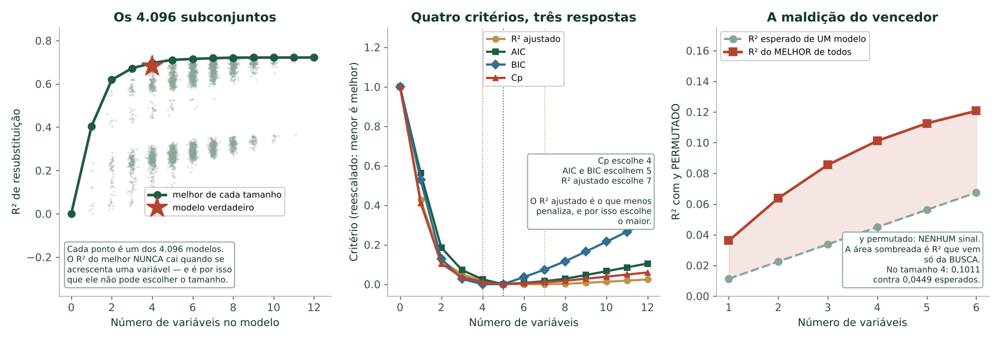
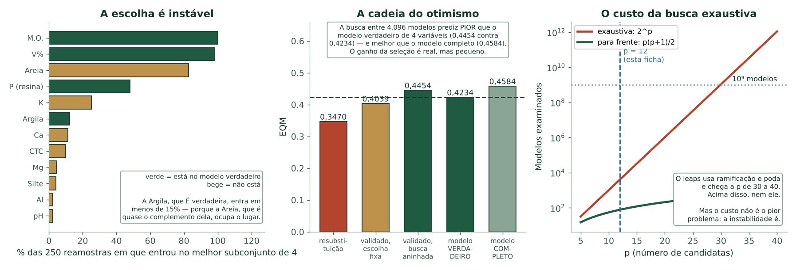

Seleção exaustiva de subconjuntos
Avalia todos os 2^p subconjuntos de candidatas e devolve o melhor de cada tamanho — expondo, no caminho, os limites da seleção de variáveis.
Comece por aqui
A seleção exaustiva responde a uma pergunta bem definida: entre todos os \(2^{p}\) subconjuntos possíveis das variáveis candidatas, qual ajusta melhor? Com doze candidatas são 4.096 modelos, todos verificáveis. A resposta é exata — e é precisamente por isso que o método serve de laboratório para entender o que a seleção de variáveis pode e não pode entregar.
Os dados são construídos: sabe-se que apenas quatro das doze candidatas entram no processo gerador. Isso permite perguntar diretamente se o método acerta — e a resposta, aqui, é instrutiva: o melhor subconjunto de tamanho quatro não é o verdadeiro, e o verdadeiro aparece em 764º lugar entre os 4.096 ordenados por soma de quadrados dos resíduos.
O que é a seleção exaustiva
Para cada tamanho \(k\) de 0 a \(p\), avaliam-se todos os \(\binom{p}{k}\) subconjuntos e guarda-se o de menor soma de quadrados dos resíduos. O resultado é uma lista com \(p+1\) modelos — um por tamanho — e nada mais. Escolher entre eles é um segundo problema, e é onde entram o \(R^2\) ajustado, o \(C_p\), o AIC, o BIC e a validação cruzada.

| p | Subconjuntos | Viável por enumeração? |
|---|---|---|
| 10 | 1 024 | sim |
| 12 | 4 096 | sim — é o caso desta ficha |
| 15 | 32 768 | sim |
| 20 | 1 048 576 | sim |
| 25 | 33 554 432 | no limite |
| 30 | 1 073 741 824 | não |
| 40 | 1,1 × 10¹² | não |
| 200 | 1,6 × 10⁶⁰ | não |
Pressupostos e como verificá-los
| Pressuposto | Por que importa | Como verificar |
|---|---|---|
| Os do modelo linear | A seleção não dispensa nenhum deles. | Resíduos do modelo ESCOLHIDO: normalidade, homocedasticidade. |
| n consideravelmente maior que p | Com p próximo de n a busca ajusta ruído. | Regra prática: n/p ≥ 10 para seleção. |
| Candidatas definidas ANTES de ver os dados | Acrescentar candidatas depois agrava a inflação. | Registre a lista antes da análise. |
| σ² estimável para o Cp | O Cp exige um estimador de σ² do modelo completo. | Impossível quando p ≥ n − 1. |
| Avaliação do erro por VC ANINHADA | Avaliar onde se escolheu é otimista. | Refaça a busca dentro de cada dobra. |
| Colinearidade reconhecida | Variáveis quase redundantes se substituem. | VIF e matriz de correlação antes de começar. |
| Ausência de hierarquia obrigatória | Termos quadráticos e interações exigem os principais. | Use force.in no regsubsets. |
| Valores-p do modelo final não reportados | Não são valores-p após a seleção. | Veja a ficha stepwise. |
Nestes dados, \(r(\text{argila}, \text{areia})=-0{,}904\) e \(r(\text{argila}, \text{silte}+\text{areia})=-0{,}957\). Quando duas variáveis carregam praticamente a mesma informação, perguntar "qual delas entra no modelo" não tem resposta estatística: ambas servem, e a busca escolhe a que por acaso se ajusta um pouco melhor à amostra. Reportar essa escolha como descoberta científica é um erro de interpretação, não de cálculo.
Formulação e cálculo
Para um subconjunto \(S\subseteq\{1,\dots,p\}\) de tamanho \(k\), com \(d=k+1\) parâmetros:
Os quatro critérios
Em que:
- \(\text{SQR}\)
- soma de quadrados dos resíduos do submodelo
- \(\text{SQT}\)
- soma de quadrados total
- \(n\)
- número de observações (90)
- \(d\)
- número de parâmetros, \(k+1\)
- \(\hat\sigma^{2}\)
- estimativa de \(\sigma^2\) pelo modelo COMPLETO
- \(p\)
- número de candidatas (12)
Lê-se muitas vezes "escolha o modelo cujo \(C_p\) esteja mais próximo de \(p\)". Essa leitura é incorreta, e a razão é algébrica: o \(C_p\) do modelo completo é sempre exatamente igual ao seu \(d\). Nestes dados, o modelo com as doze candidatas tem \(C_p=13{,}00\) e \(d=13\) — identidade, não coincidência. A regra assim enunciada escolheria trivialmente o modelo completo, sempre. A regra correta é o menor modelo cujo \(C_p\) não exceda o próprio \(d\), e aqui ela escolhe tamanho 4.
Exemplo numérico, passo a passo
Com \(\hat\sigma^2=0{,}3716\) (77 graus de liberdade do modelo completo) e \(\text{SQT}=102{,}72\):
| Tam. | Variáveis | R² | R²aj | Cp | AIC | BIC |
|---|---|---|---|---|---|---|
| 0 | (só o intercepto) | 0,0000 | 0,0000 | 188,42 | 13,90 | 16,40 |
| 1 | M.O. | 0,4039 | 0,3972 | 78,76 | −30,67 | −25,67 |
| 2 | M.O., V% | 0,6186 | 0,6099 | 21,42 | −68,86 | −61,36 |
| 3 | M.O., V%, Areia | 0,6720 | 0,6606 | 8,65 | −80,44 | −70,45 |
| 4 | M.O., P, V%, Areia | 0,6959 | 0,6816 | 4,05 | −85,25 | −72,75 |
| 5 | M.O., P, K, V%, Areia | 0,7108 | 0,6936 | 1,93 | −87,77 | −72,78 |
| 6 | M.O., P, K, Ca, V%, Areia | 0,7150 | 0,6944 | 2,77 | −87,09 | −69,59 |
| 7 | M.O., P, K, Ca, V%, Argila, Silte | 0,7187 | 0,6947 | 3,77 | −86,24 | −66,25 |
| 8 | + Areia | 0,7209 | 0,6934 | 5,14 | −84,97 | −62,47 |
| 12 | todas as candidatas | 0,7214 | 0,6780 | 13,00 | −77,13 | −44,64 |
| Critério | Tamanho escolhido | Variáveis |
|---|---|---|
| Cp de Mallows (regra correta) | 4 | M.O., P, V%, Areia |
| AIC | 5 | M.O., P, K, V%, Areia |
| BIC | 5 | M.O., P, K, V%, Areia |
| R² ajustado | 7 | M.O., P, K, Ca, V%, Argila, Silte |
| R² simples | 12 | todas — nunca use |
| Modelo verdadeiro | Melhor de tamanho 4 | |
|---|---|---|
| Variáveis | M.O., P, V%, Argila | M.O., P, V%, Areia |
| SQR | 32,8551 | 31,2342 |
| R² | 0,6801 | 0,6959 |
| Posição entre os 4.096 (por SQR) | 764º | 1º |
O melhor subconjunto de tamanho quatro erra uma variável em quatro: troca a argila pela areia. E não erra por pouco — o modelo verdadeiro está na posição 764 de 4.096, isto é, no quinto superior mas longe do topo.
O erro é compreensível e até correto do ponto de vista preditivo: como argila ≈ 100 − silte − areia, a areia é um substituto quase perfeito da argila, com sinal invertido. Nos dados observados, por acaso amostral, a areia se ajusta um pouco melhor. Nenhuma quantidade de dados resolveria a ambiguidade de forma confiável, porque as duas variáveis contêm quase a mesma informação.
A lição é que a seleção exaustiva encontra o melhor subconjunto para predizer naquela amostra, e isso não é o mesmo que encontrar o mecanismo. Quando as candidatas são colineares, as duas coisas se separam.
Propriedades
- A SQR do melhor subconjunto é NÃO CRESCENTE em \(k\): acrescentar variável nunca piora o ajuste.
- Logo \(R^2\) é não decrescente em \(k\), e não pode escolher o tamanho.
- O \(C_p\) do modelo completo é sempre exatamente \(d\).
- Para modelos lineares com \(\hat\sigma^2\) fixo, minimizar \(C_p\) e minimizar o AIC são equivalentes.
- O BIC penaliza com \(\ln n\) em vez de 2, e escolhe modelos menores quando \(n>7{,}4\).
- O custo é \(2^{p}\); o algoritmo de ramificação e poda reduz muito o tempo sem mudar o resultado.
- A estimativa de erro do modelo escolhido é otimista se não houver validação ANINHADA.
- A escolha é instável: pequenas mudanças na amostra mudam o subconjunto.
Como interpretar os resultados
| Elemento | O que informa | Cuidado |
|---|---|---|
Tabela de asteriscos do regsubsets | O melhor subconjunto de cada tamanho. | Não diz qual tamanho escolher. |
$rsq | R² de cada melhor. | Não decrescente: nunca use para escolher. |
$adjr2 | R² ajustado. | Penaliza pouco; escolhe modelos grandes. |
$cp | Cp de Mallows. | Regra: MENOR modelo com Cp ≤ d. |
$bic | BIC. | Escolhe os modelos mais parcimoniosos. |
coef(ex, k) | Coeficientes do melhor de tamanho k. | Estimativas enviesadas pela seleção. |
| Erro validado com busca aninhada | A única estimativa honesta do erro. | Sempre acima da resubstituição. |
| Frequência de inclusão no bootstrap | A estabilidade de cada variável. | Mais informativa que a escolha única. |
A maldição do vencedor
O \(R^2\) do melhor subconjunto é um máximo sobre muitas tentativas, e máximos são otimistas. A simulação desta ficha permuta \(y\) — destruindo qualquer relação com \(X\) — e repete a busca 400 vezes:
| Tamanho | R² esperado de UM subconjunto, k/(n−1) | R² do MELHOR de todos | Razão |
|---|---|---|---|
| 1 | 0,0112 | 0,0379 | 3,4 |
| 2 | 0,0225 | 0,0647 | 2,9 |
| 3 | 0,0337 | 0,0856 | 2,5 |
| 4 | 0,0449 | 0,1009 | 2,2 |
| 5 | 0,0562 | 0,1120 | 2,0 |
| 6 | 0,0674 | 0,1201 | 1,8 |
Em um conjunto sem nenhum sinal, a busca exaustiva de tamanho 4 devolve \(R^2=0{,}10\) — mais que o dobro do esperado para um modelo fixo. Um \(R^2\) de 0,10 obtido por busca entre 4.096 modelos não é evidência de relação alguma. A inflação é mais severa nos tamanhos pequenos, justamente onde se buscam modelos "parcimoniosos e interpretáveis".
Como executar no R e em Python
Onde executar o código em Python
Não é preciso instalar nada: o Google Colab é um computador na nuvem, gratuito, que executa Python pelo navegador e já traz as bibliotecas usadas aqui (numpy, scipy e matplotlib).
O pacote leaps é a implementação de referência. regsubsets(y ~ ., data = solo, nvmax = 12) devolve o melhor subconjunto de cada tamanho, e summary() dá a tabela de asteriscos mais os vetores $rsq, $adjr2, $cp e $bic. O algoritmo é o de ramificação e poda de Furnival e Wilson (1974): ele devolve exatamente o mesmo resultado da enumeração completa examinando apenas uma fração dos modelos, o que viabiliza \(p\) da ordem de 30 a 40. Para forçar a presença de um termo use force.in; para excluir, force.out. Os coeficientes de um tamanho específico saem de coef(ex, k).
library(leaps)
ex <- regsubsets(y ~ ., data = solo, nvmax = 12)
s <- summary(ex)
s$cp
min(which(s$cp <= (1:12) + 1)) # a regra correta do Cp
coef(ex, which.min(s$bic))
Exemplo de aplicação
Contexto dos dados
Os dados são fictícios e foram criados pelo autor: 90 amostras de solo de uma área experimental, com a produtividade da cultura (t/ha) e doze variáveis candidatas de análise de rotina — pH, matéria orgânica, fósforo resina, potássio, cálcio, magnésio, alumínio, CTC, saturação por bases (V%), argila, silte e areia. O processo gerador é conhecido e usa apenas quatro delas: matéria orgânica, fósforo, V% e argila, com erro de desvio-padrão 0,60 t/ha. A colinearidade é deliberada e realista: argila, silte e areia somam aproximadamente 100% por construção física, e cálcio, magnésio e potássio estão ligados à CTC e ao V%. Saber qual é o modelo verdadeiro permite verificar se cada método o encontra — o que, em dados reais, nunca é possível. O mesmo conjunto atravessa as seis fichas do grupo.
Código em R
# Seleção exaustiva de subconjuntos: exemplo completo ----
# Pacotes: leaps (regsubsets)
# Dados fictícios: 90 amostras de solo, 12 candidatas.
# O arquivo solo.csv acompanha o site, na pasta scripts/.
solo <- read.csv("solo.csv")
str(solo) # y (t/ha) e as 12 candidatas
dim(solo)
# O modelo VERDADEIRO (conhecido por construção) usa só quatro:
# y = 4,00 + 0,80*mo + 0,0250*pres + 0,0300*v + 0,0200*argila + erro
cand <- c("ph","mo","pres","k","ca","mg","al","ctc","v","argila","silte","areia")
verdadeiras <- c("mo","pres","v","argila")
# A colinearidade, que é o problema central do grupo
library(car)
vif(lm(y ~ ., data = solo))
round(cor(solo[, cand]), 2)
# ---- 1. A enumeração exaustiva: todos os 2^12 = 4.096 subconjuntos
library(leaps)
ex <- regsubsets(y ~ ., data = solo, nvmax = 12, really.big = FALSE)
s <- summary(ex)
s # a tabela de asteriscos: o melhor de cada tamanho
# O leaps NÃO testa os 4.096: usa ramificação e poda (Furnival e Wilson, 1974)
# e devolve o mesmo resultado examinando uma fração deles.
# ---- 2. Os quatro critérios, lado a lado
data.frame(tam = 1:12, R2 = round(s$rsq, 4), R2aj = round(s$adjr2, 4),
Cp = round(s$cp, 2), BIC = round(s$bic, 2))
which.max(s$adjr2) # o tamanho que o R² ajustado escolhe
which.min(s$bic) # o que o BIC escolhe
# Para o Cp a regra é o MENOR modelo com Cp <= p (e NÃO "o Cp mais próximo
# de p": o Cp do modelo completo é sempre exatamente p, de modo que essa
# leitura escolheria trivialmente o modelo completo).
min(which(s$cp <= (1:12) + 1))
# As variáveis de cada escolha
coef(ex, which.max(s$adjr2))
coef(ex, which.min(s$bic))
coef(ex, min(which(s$cp <= (1:12) + 1)))
# ---- 3. O modelo escolhido recupera o VERDADEIRO?
names(coef(ex, 4))[-1]
verdadeiras
# A areia entra no lugar da argila, porque argila = 100 - silte - areia
cor(solo$argila, solo$areia)
cor(solo$argila, solo$silte + solo$areia)
# ---- 4. A MALDIÇÃO DO VENCEDOR: y permutado, nenhum sinal
set.seed(5)
inf <- t(replicate(200, {
yp <- sample(solo$y)
sp <- summary(regsubsets(yp ~ ., data = solo[, cand], nvmax = 6))
sp$rsq[1:6] }))
rbind(esperado = (1:6)/(nrow(solo) - 1), melhor = colMeans(inf))
# O R² esperado de UM subconjunto fixo de tamanho k é k/(n-1). O do MELHOR
# de todos os subconjuntos desse tamanho é MUITO maior. A diferença é
# inflação vinda da própria busca.
# ---- 5. INSTABILIDADE: a escolha muda de amostra para amostra
set.seed(11)
cont <- numeric(12); names(cont) <- cand
for (b in 1:500) {
i <- sample(nrow(solo), replace = TRUE)
sb <- summary(regsubsets(y ~ ., data = solo[i, ], nvmax = 4))
sel <- cand[sb$which[4, -1]]
cont[sel] <- cont[sel] + 1
}
sort(round(100*cont/500, 1), decreasing = TRUE)
# ---- 6. O ERRO DE PREDIÇÃO, honestamente: validação cruzada ANINHADA
# A busca precisa ser REFEITA dentro de cada dobra. Avaliar o subconjunto
# escolhido na amostra inteira é otimista.
set.seed(3)
k <- 10; d <- sample(rep(1:k, length.out = nrow(solo)))
er_an <- er_fix <- numeric(nrow(solo))
fixo <- names(coef(ex, 4))[-1] # escolhido na amostra INTEIRA
for (j in 1:k) {
tr <- solo[d != j, ]; te <- solo[d == j, ]
sb <- summary(regsubsets(y ~ ., data = tr, nvmax = 12))
mel <- which.min(sb$bic)
vs <- cand[sb$which[mel, -1]]
m1 <- lm(reformulate(vs, "y"), data = tr)
er_an[d == j] <- te$y - predict(m1, newdata = te)
m2 <- lm(reformulate(fixo, "y"), data = tr)
er_fix[d == j] <- te$y - predict(m2, newdata = te)
}
mean(er_fix^2) # OTIMISTA: a escolha viu os dados de teste
mean(er_an^2) # honesto
mean((solo$y - fitted(lm(reformulate(verdadeiras, "y"), data = solo)))^2)
# ---- 7. Quais subconjuntos cada dobra escolhe?
for (j in 1:k) {
sb <- summary(regsubsets(y ~ ., data = solo[d != j, ], nvmax = 12))
cat(sprintf("dobra %2d: %s\n", j,
paste(cand[sb$which[which.min(sb$bic), -1]], collapse = ", ")))
}
A mesma análise em Python, com os resultados
Cole o código em um notebook do Google Colab ↗ e execute com Shift+Enter. Os valores abaixo são a saída desse código.
import numpy as np, itertools, sys
# ------------------------------------------------------------------
# Bloco comum às fichas deste grupo: funções auxiliares e dados (cab14)
# ------------------------------------------------------------------
import numpy as np, itertools
# ------------------------------------------------------------------
# Bloco comum às fichas deste grupo: funções auxiliares e dados (dados14)
# ------------------------------------------------------------------
import numpy as np
import pandas as pd
def le_csv(nome):
"""Lê o arquivo de dados da ficha: primeiro na pasta atual; se não
estiver lá (por exemplo, no Google Colab), direto do site."""
try:
return pd.read_csv(nome)
except FileNotFoundError:
return pd.read_csv('https://cassiushenrique.github.io/ModelosEstatisticos/scripts/' + nome)
# Dados fictícios: 90 amostras de solo (arquivo solo.csv, pasta scripts/ do site)
solo = le_csv('solo.csv')
NOMES=['ph', 'mo', 'pres', 'k', 'ca', 'mg', 'al', 'ctc', 'v', 'argila', 'silte', 'areia']
ROT={'ph':'pH','mo':'M.O.','pres':'P (resina)','k':'K','ca':'Ca','mg':'Mg','al':'Al','ctc':'CTC','v':'V%','argila':'Argila','silte':'Silte','areia':'Areia'}
X=solo[NOMES].to_numpy(float); Y=solo['y'].to_numpy(float)
VERD={"mo":0.80,"pres":0.0250,"v":0.0300,"argila":0.0200}
N,P=X.shape
# ------------------------------------------------------------------ fim do bloco comum
def pad(A, mu=None, sd=None):
"""Padroniza colunas (média 0, desvio 1, com n-1)."""
if mu is None: mu = A.mean(0)
if sd is None: sd = A.std(0, ddof=1)
sd = np.where(sd < 1e-12, 1.0, sd)
return (A - mu)/sd, mu, sd
def ols(A, y):
Ad = np.column_stack([np.ones(len(A)), A])
return np.linalg.lstsq(Ad, y, rcond=None)[0]
def prev(A, b):
return b[0] + A @ b[1:]
def sqr(obs, p_): return float(np.sum((obs - p_)**2))
def eqm(obs, p_): return float(np.mean((obs - p_)**2))
def ridge(A, y, lam):
"""Ridge em A JÁ padronizado; não penaliza o intercepto."""
n_, p_ = A.shape
G = A.T @ A + lam*n_*np.eye(p_)
b = np.linalg.solve(G, A.T @ (y - y.mean()))
return np.concatenate([[y.mean()], b])
def lasso(A, y, lam, it=20000, tol=1e-11):
"""Descida por coordenadas em A JÁ padronizado (Friedman et al., 2010)."""
n_, p_ = A.shape
b = np.zeros(p_); r = y - y.mean()
nrm = (A**2).sum(0)/n_
for _ in range(it):
mx = 0.0
for j in range(p_):
bj = b[j]
rho = A[:, j] @ (r + A[:, j]*bj)/n_
nb = np.sign(rho)*max(abs(rho) - lam, 0.0)/nrm[j]
if nb != bj:
r = r - A[:, j]*(nb - bj); b[j] = nb
mx = max(mx, abs(nb - bj))
if mx < tol: break
return np.concatenate([[y.mean()], b])
def pcr(A, y, m):
"""Regressão nos m primeiros componentes principais de A padronizado."""
u, s, vt = np.linalg.svd(A, full_matrices=False)
T = (u*s)[:, :m]
g = np.linalg.lstsq(T, y - y.mean(), rcond=None)[0]
b = vt[:m].T @ g
return np.concatenate([[y.mean()], b])
def pls(A, y, m):
"""NIPALS para uma resposta; devolve coeficientes na escala de A."""
Xr = A.copy(); yr = y - y.mean()
W = np.zeros((A.shape[1], m)); Pm = np.zeros((A.shape[1], m)); q = np.zeros(m)
for a in range(m):
w = Xr.T @ yr; w = w/np.linalg.norm(w)
t = Xr @ w; tt = t @ t
pj = Xr.T @ t/tt; qa = (yr @ t)/tt
Xr = Xr - np.outer(t, pj); yr = yr - qa*t
W[:, a] = w; Pm[:, a] = pj; q[a] = qa
Rm = W @ np.linalg.inv(Pm.T @ W)
b = Rm @ q
return np.concatenate([[y.mean()], b])
def dobras(n_, k, seed):
rg = np.random.default_rng(seed)
d = np.tile(np.arange(k), int(np.ceil(n_/k)))[:n_]
rg.shuffle(d); return d
def cv(ajusta, A, y, k=10, seed=0, reps=1):
"""EQM por validação cruzada; TODA a padronização dentro do laço."""
tot = []
for r in range(reps):
d = dobras(len(y), k, seed + 1000*r); e = np.empty(len(y))
for j in range(k):
tr, te = d != j, d == j
Ap, mu, sd = pad(A[tr])
b = ajusta(Ap, y[tr])
e[te] = y[te] - prev((A[te] - mu)/sd, b)
tot.append(float(np.mean(e**2)))
return float(np.mean(tot)), float(np.std(tot, ddof=1)) if reps > 1 else 0.0
def crit(A, y, cols, s2):
"""Cp de Mallows, AIC e BIC de um submodelo."""
Ad = np.column_stack([np.ones(len(A))] + [A[:, j] for j in cols])
b = np.linalg.lstsq(Ad, y, rcond=None)[0]
sq = sqr(y, Ad @ b); n_, d = len(y), len(cols) + 1
return dict(sqr=sq, p=d, r2=1 - sq/np.sum((y - y.mean())**2),
r2a=1 - (sq/(n_ - d))/(np.sum((y - y.mean())**2)/(n_ - 1)),
cp=sq/s2 - n_ + 2*d,
aic=n_*np.log(sq/n_) + 2*d, bic=n_*np.log(sq/n_) + np.log(n_)*d)
def vif(A):
Ap, _, _ = pad(A); out = []
for j in range(A.shape[1]):
o = [i for i in range(A.shape[1]) if i != j]
b = ols(Ap[:, o], Ap[:, j]); r = Ap[:, j] - prev(Ap[:, o], b)
out.append(1/(1 - (1 - r @ r/np.sum((Ap[:, j] - Ap[:, j].mean())**2))))
return np.array(out)
def c(v, d=4):
return ('%.*f' % (d, v)).replace('.', ',')
def lasso_path(A, y, lams, it=5000, tol=1e-10):
"""Caminho do lasso com partida quente (como o glmnet). lams DECRESCENTE."""
n_, p_ = A.shape
b = np.zeros(p_); r = y - y.mean(); nrm = (A**2).sum(0)/n_
out = []
for lam in lams:
for _ in range(it):
mx = 0.0
for j in range(p_):
bj = b[j]
rho = A[:, j] @ (r + A[:, j]*bj)/n_
nb = np.sign(rho)*max(abs(rho) - lam, 0.0)/nrm[j]
if nb != bj:
r = r - A[:, j]*(nb - bj); b[j] = nb
mx = max(mx, abs(nb - bj))
if mx < tol: break
out.append(np.concatenate([[y.mean()], b.copy()]))
return out
def enet_path(A, y, lams, al, it=5000, tol=1e-10):
n_, p_ = A.shape
b = np.zeros(p_); r = y - y.mean(); nrm = (A**2).sum(0)/n_
out = []
for lam in lams:
for _ in range(it):
mx = 0.0
for j in range(p_):
bj = b[j]
rho = A[:, j] @ (r + A[:, j]*bj)/n_
nb = np.sign(rho)*max(abs(rho) - lam*al, 0.0)/(nrm[j] + lam*(1 - al))
if nb != bj:
r = r - A[:, j]*(nb - bj); b[j] = nb
mx = max(mx, abs(nb - bj))
if mx < tol: break
out.append(np.concatenate([[y.mean()], b.copy()]))
return out
def cv_path(ajusta_path, A, y, lams, k=10, seed=0, reps=1):
"""EQM por VC para TODA a grade de lambda de uma vez, com partida quente."""
acc = np.zeros((reps, len(lams)))
for rp in range(reps):
d = dobras(len(y), k, seed + 1000*rp); E = np.zeros((len(lams), len(y)))
for j in range(k):
tr, te = d != j, d == j
Ap, mu, sd = pad(A[tr])
bs = ajusta_path(Ap, y[tr], lams)
Ate = (A[te] - mu)/sd
for i, b in enumerate(bs): E[i, te] = y[te] - prev(Ate, b)
acc[rp] = (E**2).mean(1)
return acc.mean(0), acc.std(0, ddof=1) if reps > 1 else np.zeros(len(lams))
def _cd_gram(G, Ay, lam, al, b, dg, it=10000, tol=1e-11):
"""Descida por coordenadas usando a matriz de Gram: só escalares no laço."""
p_ = len(b)
for _ in range(it):
mx = 0.0
for j in range(p_):
bj = b[j]
rho = Ay[j] - (G[j] @ b - dg[j]*bj)
nb = np.sign(rho)*max(abs(rho) - lam*al, 0.0)/(dg[j] + lam*(1 - al))
if nb != bj:
b[j] = nb; mx = max(mx, abs(nb - bj))
if mx < tol: break
return b
def enet_path_g(A, y, lams, al=1.0):
"""Caminho da rede elástica (al=1 é o lasso) com Gram e partida quente."""
n_, p_ = A.shape
G = A.T @ A/n_; Ay = A.T @ (y - y.mean())/n_; dg = np.diag(G).copy()
b = np.zeros(p_); out = []
for lam in lams:
b = _cd_gram(G, Ay, lam, al, b, dg)
out.append(np.concatenate([[y.mean()], b.copy()]))
return out
def lasso_path_g(A, y, lams): return enet_path_g(A, y, lams, 1.0)
def _cd_ativo(G, Ay, lam, al, b, dg, it=200, tol=1e-11):
"""Descida por coordenadas com CONJUNTO ATIVO (estratégia do glmnet):
varre tudo, depois itera só nos coeficientes não nulos."""
p_ = len(b)
for _ in range(it):
# varredura completa
mx = 0.0
for j in range(p_):
bj = b[j]
rho = Ay[j] - (G[j] @ b - dg[j]*bj)
nb = np.sign(rho)*max(abs(rho) - lam*al, 0.0)/(dg[j] + lam*(1 - al))
if nb != bj:
b[j] = nb; mx = max(mx, abs(nb - bj))
ativo = np.flatnonzero(b)
if len(ativo) == 0 or mx < tol: break
Ga = G[np.ix_(ativo, ativo)]; Aya = Ay[ativo]; dga = dg[ativo]
ba = b[ativo].copy()
for _ in range(2000):
mxa = 0.0
for i in range(len(ativo)):
bi = ba[i]
rho = Aya[i] - (Ga[i] @ ba - dga[i]*bi)
nb = np.sign(rho)*max(abs(rho) - lam*al, 0.0)/(dga[i] + lam*(1 - al))
if nb != bi:
ba[i] = nb; mxa = max(mxa, abs(nb - bi))
if mxa < tol: break
b[ativo] = ba
if mx < tol: break
return b
def enet_path_a(A, y, lams, al=1.0):
n_, p_ = A.shape
G = A.T @ A/n_; Ay = A.T @ (y - y.mean())/n_; dg = np.diag(G).copy()
b = np.zeros(p_); out = []
for lam in lams:
b = _cd_ativo(G, Ay, lam, al, b, dg)
out.append(np.concatenate([[y.mean()], b.copy()]))
return out
def lasso_path_a(A, y, lams): return enet_path_a(A, y, lams, 1.0)
# ------------------------------------------------------------------ fim do bloco comum
np.set_printoptions(suppress=True)
print('ANÁLISE DE SOLO: 90 amostras, 12 candidatas, resposta = produtividade')
print('O modelo VERDADEIRO (dados fictícios, de construção conhecida) usa')
print('apenas QUATRO das doze: M.O., P resina, V% e argila.')
print()
print('variável VIF r com y no modelo verdadeiro?')
V=vif(X)
for j,nm in enumerate(NOMES):
print('%-9s %9.1f %+7.4f %s'%(ROT[nm],V[j],np.corrcoef(X[:,j],Y)[0,1],
'SIM' if nm in VERD else '-'))
print()
print('A argila, o silte e a areia somam aproximadamente 100% por construção')
print('física, e por isso os VIF delas são os maiores: 101, 29 e 126.')
Xp,mu,sd=pad(X); SQT=float(np.sum((Y-Y.mean())**2))
s2=sqr(Y,prev(Xp,ols(Xp,Y)))/(N-P-1)
print('\nsigma^2 estimado pelo modelo completo = %s (g.l. = %d)'%(c(s2),N-P-1))
print('\n'+'='*70)
print('ENUMERAÇÃO EXAUSTIVA: todos os 2^12 = 4.096 subconjuntos')
melhor={}; todos=[]
for tam in range(0,P+1):
bb=None
for cols in itertools.combinations(range(P),tam):
r=crit(Xp,Y,list(cols),s2); r['cols']=cols; todos.append(r)
if bb is None or r['sqr']<bb['sqr']: bb=r
melhor[tam]=bb
print('%d subconjuntos avaliados'%len(todos))
print()
print('tam. variáveis do melhor subconjunto desse tamanho R² R²aj Cp AIC BIC')
for tam in range(0,P+1):
b=melhor[tam]; nm=', '.join(ROT[NOMES[j]] for j in b['cols']) or '(só intercepto)'
print('%3d %-50s %6s %7s %7s %8s %8s'%(tam,nm[:50],c(b['r2'],4),c(b['r2a'],4),
c(b['cp'],2),c(b['aic'],2),c(b['bic'],2)))
print()
for nome,chave,mn in [('R² ajustado','r2a',False),('Cp de Mallows','cp',None),
('AIC','aic',True),('BIC','bic',True)]:
if chave=='cp':
cand=[k for k in range(P+1) if melhor[k]['cp']<=melhor[k]['p']]
t=min(cand); t2=min(range(P+1),key=lambda k:melhor[k]['cp'])
print('%-15s escolhe tamanho %d (MENOR modelo com Cp <= p)'%(nome,t))
print('%-15s menor Cp absoluto: tamanho %d (Cp = %s)'%('',t2,c(melhor[t2]['cp'],2)))
print('%-15s ATENÇÃO: o Cp do modelo COMPLETO é sempre exatamente p.'%'')
print('%-15s Aqui: Cp = %s e p = %d. A regra "Cp mais próximo de p"'%('',c(melhor[P]['cp'],2),melhor[P]['p']))
print('%-15s escolheria trivialmente o modelo completo, e está errada.'%'')
print('%-15s A regra correta é o MENOR modelo com Cp <= p: tamanho %d,'%('',t))
print('%-15s que é %s'%('',', '.join(ROT[NOMES[j]] for j in melhor[t]['cols'])))
else:
f=max if not mn else min
t=f(range(P+1),key=lambda k:melhor[k][chave])
print('%-15s escolhe tamanho %d: %s'%(nome,t,', '.join(ROT[NOMES[j]] for j in melhor[t]['cols'])))
print('\nO modelo VERDADEIRO tem tamanho 4: M.O., P (resina), V%, Argila')
vt=tuple(sorted(NOMES.index(k) for k in VERD))
print('O melhor subconjunto de tamanho 4 é:',', '.join(ROT[NOMES[j]] for j in melhor[4]['cols']))
print('É o verdadeiro?',melhor[4]['cols']==vt)
rv=crit(Xp,Y,list(vt),s2)
print('SQR do verdadeiro = %s | SQR do melhor de tamanho 4 = %s'%(c(rv['sqr']),c(melhor[4]['sqr'])))
print('R² do verdadeiro = %s | do melhor de tamanho 4 = %s'%(c(rv['r2']),c(melhor[4]['r2'])))
pos=sorted(range(len(todos)),key=lambda i:todos[i]['sqr'])
rk=[i for i,q in enumerate(pos) if todos[q]['cols']==vt][0]
print('Posição do modelo verdadeiro no ranking dos 4.096 por SQR: %dº'%(rk+1))
print('\n'+'='*70)
print('A MALDIÇÃO DO VENCEDOR: o R² do melhor subconjunto é otimista por')
print('construção, porque é o MÁXIMO de muitas tentativas.')
print()
print('Simulação: y PERMUTADO (nenhuma relação com X), 400 repetições.')
rg=np.random.default_rng(5)
mr=np.zeros((400,6))
for r in range(400):
yp=rg.permutation(Y)
for ti,tam in enumerate([1,2,3,4,5,6]):
mx=0
for cols in itertools.combinations(range(P),tam):
Ad=np.column_stack([np.ones(N)]+[Xp[:,j] for j in cols])
b=np.linalg.lstsq(Ad,yp,rcond=None)[0]
mx=max(mx,1-sqr(yp,Ad@b)/np.sum((yp-yp.mean())**2))
mr[r,ti]=mx
print('tam. R² esperado de UM subconjunto R² do MELHOR subconjunto')
for ti,tam in enumerate([1,2,3,4,5,6]):
print('%3d %s %s'%(tam,c(tam/(N-1),4),c(mr[:,ti].mean(),4)))
print()
print('Com y permutado, o R² esperado de um subconjunto fixo de tamanho k é')
print('k/(n-1). O R² do MELHOR de todos os subconjuntos desse tamanho é muito')
print('maior: no tamanho 4, %s contra %s esperados. É inflação pura,'%(c(mr[:,3].mean(),4),c(4/(N-1),4)))
print('vinda da própria busca, sem nenhum sinal nos dados.')
print('\n'+'='*70)
print('O que a busca exaustiva CUSTA, e o que ela NÃO resolve')
print()
print(' p subconjuntos viável?')
for p_ in [10,12,15,20,25,30,40,50]:
print('%4d %18s %s'%(p_,('%d'%2**p_),'sim' if p_<=25 else 'não'))
print()
print('O leaps::regsubsets usa ramificação e poda (branch and bound) e chega a')
print('p da ordem de 30 a 40; acima disso, nem ele. E o custo não é o pior')
print('problema: o pior é a INSTABILIDADE da escolha.')
print('\n'+'='*70)
print('INSTABILIDADE: 500 reamostras bootstrap, busca exaustiva em cada uma.')
print('Com que frequência cada variável entra no melhor subconjunto de 4?')
rg=np.random.default_rng(11)
cont=np.zeros(P); mesmo=0
for r in range(500):
i=rg.integers(0,N,N); Xb,_,_=pad(X[i]); yb=Y[i]
bb=None
for cols in itertools.combinations(range(P),4):
Ad=np.column_stack([np.ones(N)]+[Xb[:,j] for j in cols])
b=np.linalg.lstsq(Ad,yb,rcond=None)[0]; sq=sqr(yb,Ad@b)
if bb is None or sq<bb[0]: bb=(sq,cols)
for j in bb[1]: cont[j]+=1
if bb[1]==melhor[4]['cols']: mesmo+=1
print()
print('variável frequência de inclusão no verdadeiro?')
for j in np.argsort(-cont):
print('%-10s %6.1f%% %s'%(ROT[NOMES[j]],100*cont[j]/500,
'SIM' if NOMES[j] in VERD else '-'))
print()
print('O melhor subconjunto de 4 da amostra original foi reencontrado em')
print('apenas %.1f%% das 500 reamostras.'%(100*mesmo/500))
print('\n'+'='*70)
print('A COMPARAÇÃO QUE IMPORTA: erro de PREDIÇÃO validado por k-fold')
print('(validação cruzada ANINHADA: a busca é refeita dentro de cada dobra)')
print()
d=dobras(N,10,3)
er_an=np.empty(N); er_fix=np.empty(N)
for j in range(10):
tr,te=d!=j,d==j
Ap,m_,s_=pad(X[tr]); ytr=Y[tr]
s2t=sqr(ytr,prev(Ap,ols(Ap,ytr)))/(tr.sum()-P-1)
bb=None
for tam in range(1,P+1):
for cols in itertools.combinations(range(P),tam):
r=crit(Ap,ytr,list(cols),s2t)
if bb is None or r['bic']<bb['bic']: bb=r; bb['cols']=cols
Ad=np.column_stack([np.ones(tr.sum())]+[Ap[:,k] for k in bb['cols']])
b=np.linalg.lstsq(Ad,ytr,rcond=None)[0]
Xte=(X[te]-m_)/s_
er_an[te]=Y[te]-(b[0]+Xte[:,list(bb['cols'])]@b[1:])
# mesmo modelo, mas escolhido NA AMOSTRA INTEIRA (errado de propósito)
Ad2=np.column_stack([np.ones(tr.sum())]+[Ap[:,k] for k in melhor[4]['cols']])
b2=np.linalg.lstsq(Ad2,ytr,rcond=None)[0]
er_fix[te]=Y[te]-(b2[0]+Xte[:,list(melhor[4]['cols'])]@b2[1:])
print('EQM de resubstituição do melhor subconjunto de 4 = %s'%c(melhor[4]['sqr']/N))
print('EQM validado, subconjunto escolhido na amostra INTEIRA = %s <- OTIMISTA'%c(eqm(np.zeros(N),er_fix)))
print('EQM validado, busca REFEITA dentro de cada dobra = %s'%c(eqm(np.zeros(N),er_an)))
print('EQM validado do modelo VERDADEIRO (4 variáveis) = %s'%c(cv(ols,X[:,list(vt)],Y,10,3)[0]))
print('EQM validado do modelo COMPLETO (12 variáveis) = %s'%c(cv(ols,X,Y,10,3)[0]))
print()
print('Os subconjuntos escolhidos dentro de cada uma das 10 dobras:')
d=dobras(N,10,3)
for j in range(10):
tr=d!=j; Ap,_,_=pad(X[tr]); ytr=Y[tr]
s2t=sqr(ytr,prev(Ap,ols(Ap,ytr)))/(tr.sum()-P-1); bb=None
for tam in range(1,P+1):
for cols in itertools.combinations(range(P),tam):
r=crit(Ap,ytr,list(cols),s2t)
if bb is None or r['bic']<bb['bic']: bb=r; bb['cols']=cols
print(' dobra %2d (%d vars): %s'%(j+1,len(bb['cols']),', '.join(ROT[NOMES[k]] for k in bb['cols'])))
Resultados da execução
ANÁLISE DE SOLO: 90 amostras, 12 candidatas, resposta = produtividade
O modelo VERDADEIRO (dados fictícios, de construção conhecida) usa
apenas QUATRO das doze: M.O., P resina, V% e argila.
variável VIF r com y no modelo verdadeiro?
pH 4.6 +0.2234 -
M.O. 1.8 +0.6356 SIM
P (resina) 1.1 +0.1303 SIM
K 8.0 +0.4833 -
Ca 13.0 +0.4435 -
Mg 8.5 +0.4486 -
Al 1.6 +0.0188 -
CTC 9.5 +0.3490 -
V% 22.2 +0.3509 SIM
Argila 101.3 +0.1513 SIM
Silte 29.2 +0.1875 -
Areia 125.9 -0.1961 -
A argila, o silte e a areia somam aproximadamente 100% por construção
física, e por isso os VIF delas são os maiores: 101, 29 e 126.
sigma^2 estimado pelo modelo completo = 0,3716 (g.l. = 77)
======================================================================
ENUMERAÇÃO EXAUSTIVA: todos os 2^12 = 4.096 subconjuntos
4096 subconjuntos avaliados
tam. variáveis do melhor subconjunto desse tamanho R² R²aj Cp AIC BIC
0 (só intercepto) -0,0000 0,0000 188,42 13,90 16,40
1 M.O. 0,4039 0,3972 78,76 -30,67 -25,67
2 M.O., V% 0,6186 0,6099 21,42 -68,86 -61,36
3 M.O., V%, Areia 0,6720 0,6606 8,65 -80,44 -70,45
4 M.O., P (resina), V%, Areia 0,6959 0,6816 4,05 -85,25 -72,75
5 M.O., P (resina), K, V%, Areia 0,7108 0,6936 1,93 -87,77 -72,78
6 M.O., P (resina), K, Ca, V%, Areia 0,7150 0,6944 2,77 -87,09 -69,59
7 M.O., P (resina), K, Ca, V%, Argila, Silte 0,7187 0,6947 3,77 -86,24 -66,25
8 M.O., P (resina), K, Ca, V%, Argila, Silte, Areia 0,7209 0,6934 5,14 -84,97 -62,47
9 M.O., P (resina), K, Ca, CTC, V%, Argila, Silte, A 0,7213 0,6900 7,03 -83,10 -58,10
10 pH, M.O., P (resina), K, Ca, CTC, V%, Argila, Silt 0,7214 0,6861 9,01 -81,12 -53,62
11 pH, M.O., P (resina), K, Ca, Al, CTC, V%, Argila, 0,7214 0,6821 11,01 -79,13 -49,13
12 pH, M.O., P (resina), K, Ca, Mg, Al, CTC, V%, Argi 0,7214 0,6780 13,00 -77,13 -44,64
R² ajustado escolhe tamanho 7: M.O., P (resina), K, Ca, V%, Argila, Silte
Cp de Mallows escolhe tamanho 4 (MENOR modelo com Cp <= p)
menor Cp absoluto: tamanho 5 (Cp = 1,93)
ATENÇÃO: o Cp do modelo COMPLETO é sempre exatamente p.
Aqui: Cp = 13,00 e p = 13. A regra "Cp mais próximo de p"
escolheria trivialmente o modelo completo, e está errada.
A regra correta é o MENOR modelo com Cp <= p: tamanho 4,
que é M.O., P (resina), V%, Areia
AIC escolhe tamanho 5: M.O., P (resina), K, V%, Areia
BIC escolhe tamanho 5: M.O., P (resina), K, V%, Areia
O modelo VERDADEIRO tem tamanho 4: M.O., P (resina), V%, Argila
O melhor subconjunto de tamanho 4 é: M.O., P (resina), V%, Areia
É o verdadeiro? False
SQR do verdadeiro = 32,8551 | SQR do melhor de tamanho 4 = 31,2342
R² do verdadeiro = 0,6801 | do melhor de tamanho 4 = 0,6959
Posição do modelo verdadeiro no ranking dos 4.096 por SQR: 764º
======================================================================
A MALDIÇÃO DO VENCEDOR: o R² do melhor subconjunto é otimista por
construção, porque é o MÁXIMO de muitas tentativas.
Simulação: y PERMUTADO (nenhuma relação com X), 400 repetições.
tam. R² esperado de UM subconjunto R² do MELHOR subconjunto
1 0,0112 0,0379
2 0,0225 0,0647
3 0,0337 0,0856
4 0,0449 0,1009
5 0,0562 0,1120
6 0,0674 0,1201
Com y permutado, o R² esperado de um subconjunto fixo de tamanho k é
k/(n-1). O R² do MELHOR de todos os subconjuntos desse tamanho é muito
maior: no tamanho 4, 0,1009 contra 0,0449 esperados. É inflação pura,
vinda da própria busca, sem nenhum sinal nos dados.
======================================================================
O que a busca exaustiva CUSTA, e o que ela NÃO resolve
p subconjuntos viável?
10 1024 sim
12 4096 sim
15 32768 sim
20 1048576 sim
25 33554432 sim
30 1073741824 não
40 1099511627776 não
50 1125899906842624 não
O leaps::regsubsets usa ramificação e poda (branch and bound) e chega a
p da ordem de 30 a 40; acima disso, nem ele. E o custo não é o pior
problema: o pior é a INSTABILIDADE da escolha.
======================================================================
INSTABILIDADE: 500 reamostras bootstrap, busca exaustiva em cada uma.
Com que frequência cada variável entra no melhor subconjunto de 4?
variável frequência de inclusão no verdadeiro?
M.O. 100.0% SIM
V% 98.0% SIM
Areia 81.6% -
P (resina) 47.8% SIM
K 25.8% -
Argila 13.0% SIM
CTC 10.2% -
Ca 9.8% -
Silte 5.6% -
Mg 3.8% -
Al 2.6% -
pH 1.8% -
O melhor subconjunto de 4 da amostra original foi reencontrado em
apenas 36.0% das 500 reamostras.
======================================================================
A COMPARAÇÃO QUE IMPORTA: erro de PREDIÇÃO validado por k-fold
(validação cruzada ANINHADA: a busca é refeita dentro de cada dobra)
EQM de resubstituição do melhor subconjunto de 4 = 0,3470
EQM validado, subconjunto escolhido na amostra INTEIRA = 0,4039 <- OTIMISTA
EQM validado, busca REFEITA dentro de cada dobra = 0,4454
EQM validado do modelo VERDADEIRO (4 variáveis) = 0,4234
EQM validado do modelo COMPLETO (12 variáveis) = 0,4584
Os subconjuntos escolhidos dentro de cada uma das 10 dobras:
dobra 1 (5 vars): M.O., P (resina), K, V%, Areia
dobra 2 (5 vars): M.O., P (resina), CTC, V%, Areia
dobra 3 (5 vars): M.O., P (resina), Ca, V%, Areia
dobra 4 (5 vars): M.O., P (resina), Ca, V%, Areia
dobra 5 (4 vars): M.O., P (resina), V%, Areia
dobra 6 (5 vars): M.O., P (resina), Ca, V%, Areia
dobra 7 (3 vars): M.O., V%, Areia
dobra 8 (4 vars): M.O., P (resina), V%, Areia
dobra 9 (4 vars): M.O., P (resina), V%, Areia
dobra 10 (5 vars): M.O., P (resina), K, V%, Areia
| Variável | Frequência de inclusão | No modelo verdadeiro? |
|---|---|---|
| M.O. | 100,0% | SIM |
| V% | 98,0% | SIM |
| Areia | 81,6% | não |
| P (resina) | 47,8% | SIM |
| K | 25,8% | não |
| Argila | 13,0% | SIM |
| CTC | 10,2% | não |
| Ca | 9,8% | não |
| Silte | 5,6% | não |
| Mg | 3,8% | não |
| Al | 2,6% | não |
| pH | 1,8% | não |
O melhor subconjunto de quatro da amostra original foi reencontrado em apenas 36,0% das 500 reamostras.
| Estimativa | EQM | Natureza |
|---|---|---|
| Resubstituição do melhor subconjunto de 4 | 0,3470 | otimista |
| Validada, subconjunto escolhido na amostra INTEIRA | 0,4039 | ainda otimista |
| Validada, busca REFEITA em cada dobra | 0,4454 | honesta |
| Validada, modelo VERDADEIRO (4 variáveis) | 0,4234 | referência |
| Validada, modelo COMPLETO (12 variáveis) | 0,4584 | sem seleção |
| Dobra | Tam. | Variáveis |
|---|---|---|
| 1 | 5 | M.O., P, K, V%, Areia |
| 2 | 5 | M.O., P, CTC, V%, Areia |
| 3 | 5 | M.O., P, Ca, V%, Areia |
| 4 | 5 | M.O., P, Ca, V%, Areia |
| 5 | 4 | M.O., P, V%, Areia |
| 6 | 5 | M.O., P, Ca, V%, Areia |
| 7 | 3 | M.O., V%, Areia |
| 8 | 4 | M.O., P, V%, Areia |
| 9 | 4 | M.O., P, V%, Areia |
| 10 | 5 | M.O., P, K, V%, Areia |
Leitura: a tabela dos melhores subconjuntos mostra por que o \(R^2\) não pode escolher o tamanho — ele sobe de 0,4039 a 0,7214 e nunca desce. Os quatro critérios que penalizam a complexidade dão três respostas diferentes: \(C_p\) escolhe 4, AIC e BIC escolhem 5, o \(R^2\) ajustado escolhe 7. A discordância não é defeito de implementação: cada critério tem uma penalidade diferente, e o \(R^2\) ajustado é o mais frouxo de todos, por isso escolhe o maior modelo. Entre o modelo de 4 e o de 7, o \(R^2\) ajustado difere na quarta casa decimal (0,6816 contra 0,6947) — isto é, os critérios estão escolhendo entre modelos praticamente empatados, e a escolha é em boa medida arbitrária.
Sobre a instabilidade: esta é a objeção mais séria ao método, e a tabela do bootstrap a expõe sem ambiguidade. A argila está no processo gerador e entra no melhor subconjunto em apenas 13,0% das reamostras; a areia, que não está, entra em 81,6%. O fósforo, que está, entra em 47,8% — menos que uma vez em duas. E o conjunto exato escolhido na amostra original reaparece em 36% das reamostras. Reportar "as variáveis selecionadas foram M.O., P, V% e areia" como se fosse um resultado sugere uma precisão que os dados não têm.
Sobre o otimismo: a cadeia de cinco números tem o mesmo formato das fichas de avaliação de modelos, e a mesma lição. A resubstituição dá 0,3470; avaliar por validação cruzada o subconjunto que foi escolhido usando todos os dados dá 0,4039 — melhor, mas ainda otimista, porque a escolha viu as dobras de teste; refazer a busca dentro de cada dobra dá 0,4454. A diferença entre 0,4039 e 0,4454 é o otimismo de seleção, e vale 10% do erro.
O resultado mais desconfortável: a busca aninhada entre 4.096 modelos (0,4454) prediz pior que o modelo verdadeiro de quatro variáveis (0,4234). Isso não é paradoxal — é o esperado. A busca paga em variância o que ganha em flexibilidade, e quem já conhece o modelo correto não paga nada. Em compensação, a busca prediz melhor que o modelo completo com as doze (0,4584), de modo que a seleção é útil: ela reduz o erro em 2,8% em relação a não selecionar nada. O ganho é real e pequeno, e vale dizê-lo nessa ordem.
Sobre as dobras: as dez dobras escolhem dez subconjuntos, de tamanho 3 a 5, e apenas quatro variáveis aparecem em todas: M.O., P, V% e areia. É uma forma prática de medir estabilidade sem bootstrap, e deveria ser reportada junto com a escolha final.
Erros comuns
| Erro | Como evitar |
|---|---|
| Usar o R² para escolher o tamanho | Ele é não decrescente; use Cp, BIC ou validação. |
| Ler o Cp como "mais próximo de p" | O Cp do modelo completo é sempre p; use Cp ≤ d. |
| Reportar os valores-p do modelo escolhido | Não são valores-p; veja a ficha stepwise. |
| Avaliar o erro no conjunto em que se escolheu | Use validação cruzada ANINHADA. |
| Apresentar o subconjunto escolhido como descoberta | Reporte a frequência de inclusão por bootstrap. |
| Aplicar a busca com p próximo de n | A inflação torna o resultado inútil. |
| Acrescentar candidatas depois de ver os resultados | Agrava a maldição do vencedor. |
| Ignorar a colinearidade antes de buscar | Variáveis redundantes se substituem ao acaso. |
| Selecionar termos quadráticos sem os principais | Use force.in para respeitar a hierarquia. |
| Interpretar a ausência de uma variável como ausência de efeito | Ela pode ter sido substituída por uma colinear. |
| Usar o modelo escolhido para inferência sem correção | Veja inferência pós-seleção nas alternativas. |
| Confiar em "o melhor modelo" quando os critérios discordam | A discordância é informação: os modelos estão empatados. |
Alternativas e fluxo de trabalho
| Procedimento | Quando preferir |
|---|---|
| Seleção stepwise | Quando p é grande demais para a exaustiva — com as mesmas ressalvas. |
| Lasso | Seleção e encolhimento simultâneos; funciona com p > n. |
| Ridge | Quando não se quer selecionar, só estabilizar — e a predição é o alvo. |
| Rede elástica | Candidatas colineares em grupos, como aqui. |
| PCR e PLS | Quando se quer reduzir dimensão sem descartar variáveis. |
| Médias de modelos (model averaging) | Quando os critérios empatam: combina em vez de escolher. |
| Pesos de evidência do AIC | Quantifica o quanto cada modelo é apoiado. |
| Reduzir candidatas por conhecimento da área | A melhor seleção de variáveis é a que não usa os dados. |
| Manter o modelo completo | Quando p é pequeno e o alvo é predição: evita a maldição do vencedor. |
| Inferência pós-seleção | Quando se precisa de intervalos válidos após selecionar. |
- Defina as candidatas ANTES de ver os dados, e registre a lista.
- Examine VIF e correlações: grupos colineares tornam a escolha arbitrária.
- Verifique que n/p é confortável — ao menos 10.
- Rode a busca com
regsubsetse examine o melhor de cada tamanho. - Escolha o tamanho por BIC ou por validação cruzada, nunca por R².
- Estime o erro por validação ANINHADA, refazendo a busca em cada dobra.
- Meça a estabilidade por bootstrap e reporte as frequências de inclusão.
- Não reporte valores-p do modelo escolhido.
- Compare com o lasso e com o ridge antes de concluir que a seleção ajudou.
- Se os critérios discordarem, diga isso em vez de escolher um deles.
Referências desta ficha
- MILLER, Alan J. Subset selection in regression. 2. ed. Boca Raton: Chapman & Hall/CRC, 2002.
- MALLOWS, Colin L. Some comments on Cp. Technometrics, v. 15, n. 4, p. 661-675, 1973.
- FURNIVAL, George M.; WILSON, Robert W. Regressions by leaps and bounds. Technometrics, v. 16, n. 4, p. 499-511, 1974.
- AKAIKE, Hirotugu. A new look at the statistical model identification. IEEE Transactions on Automatic Control, v. 19, n. 6, p. 716-723, 1974.
- SCHWARZ, Gideon. Estimating the dimension of a model. The Annals of Statistics, v. 6, n. 2, p. 461-464, 1978.
- BERK, Richard; BROWN, Lawrence; BUJA, Andreas; ZHANG, Kai; ZHAO, Linda. Valid post-selection inference. The Annals of Statistics, v. 41, n. 2, p. 802-837, 2013.
- LOCKHART, Richard; TAYLOR, Jonathan; TIBSHIRANI, Ryan J.; TIBSHIRANI, Robert. A significance test for the lasso. The Annals of Statistics, v. 42, n. 2, p. 413-468, 2014.
- BURNHAM, Kenneth P.; ANDERSON, David R. Model selection and multimodel inference. 2. ed. New York: Springer, 2002.
- FREEDMAN, David A. A note on screening regression equations. The American Statistician, v. 37, n. 2, p. 152-155, 1983.
- HARRELL, Frank E. Regression modeling strategies. 2. ed. New York: Springer, 2015.
- HASTIE, Trevor; TIBSHIRANI, Robert; FRIEDMAN, Jerome. The elements of statistical learning. 2. ed. New York: Springer, 2009.
- JAMES, Gareth; WITTEN, Daniela; HASTIE, Trevor; TIBSHIRANI, Robert. An introduction to statistical learning: with applications in R. 2. ed. New York: Springer, 2021.
- HOCKING, R. R. The analysis and selection of variables in linear regression. Biometrics, v. 32, n. 1, p. 1-49, 1976.
- LUMLEY, Thomas; MILLER, Alan. leaps: regression subset selection. R package. Disponível em: https://CRAN.R-project.org/package=leaps.
- FOX, John; WEISBERG, Sanford. An R companion to applied regression. 3. ed. Thousand Oaks: Sage, 2019. (Pacote
car, funçãovif.) - R CORE TEAM. R: a language and environment for statistical computing. Vienna: R Foundation for Statistical Computing, 2026. Disponível em: https://www.r-project.org/.
- POSIT TEAM. RStudio: integrated development environment for R. Boston: Posit Software, PBC. Disponível em: https://posit.co/download/rstudio-desktop/.
- VIRTANEN, Pauli et al. SciPy 1.0: fundamental algorithms for scientific computing in Python. Nature Methods, v. 17, p. 261-272, 2020. DOI: 10.1038/s41592-019-0686-2. (Funções do módulo
scipy.stats.) - HARRIS, Charles R. et al. Array programming with NumPy. Nature, v. 585, p. 357-362, 2020. DOI: 10.1038/s41586-020-2649-2.
- HUNTER, John D. Matplotlib: a 2D graphics environment. Computing in Science & Engineering, v. 9, n. 3, p. 90-95, 2007.
- GOOGLE. Google Colaboratory. Disponível em: https://colab.research.google.com/.
- As figuras desta ficha foram elaboradas pelo autor.

Prof. Dr. Cássius Henrique Xavier Oliveira
Professor · ICTIN/UFLA · Estatística, Confiabilidade e Ciência de Dados.
Conheça minha trajetória e projetos →